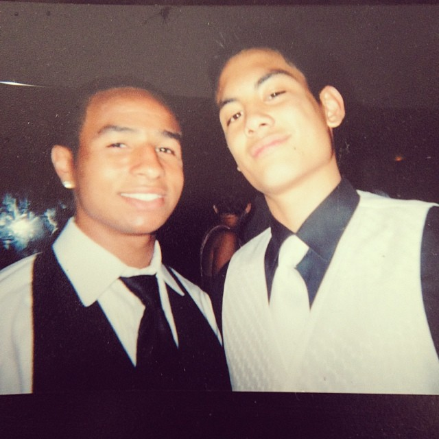

Raphael
Best Man
BIO
Raphael and Jon have known each other since 6th grade and have been best friends ever since. Over the span of 19 years, their friendship has grown into a brotherhood. Raphael brings a livelihood and joy to any situation. They both share a love for sports, adventure and life. He is ultra-positive and always has had Jon’s back. He is loyal, a confidant and incredibly generous. Raphael is true a friend and brother for life. He now lives in Tacoma with his wife Rachel.
